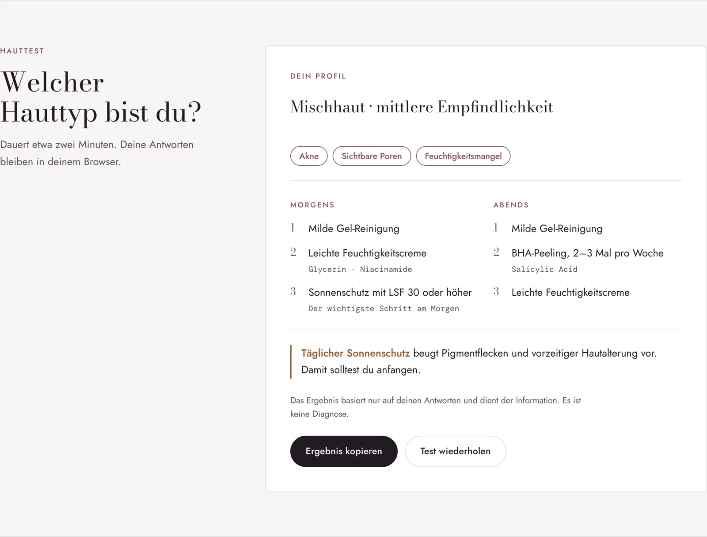
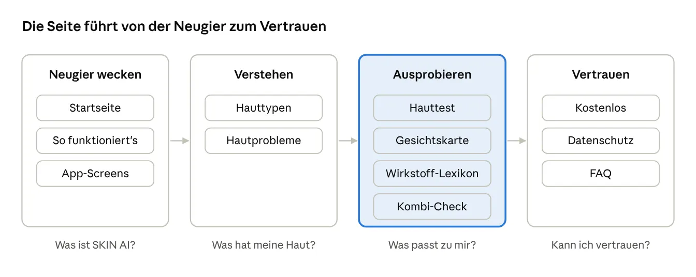
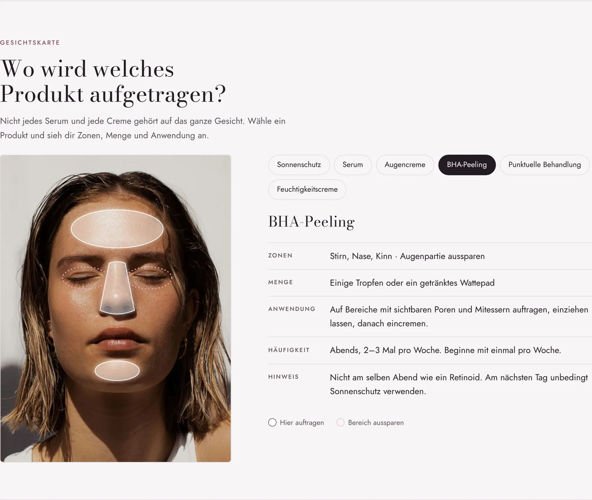
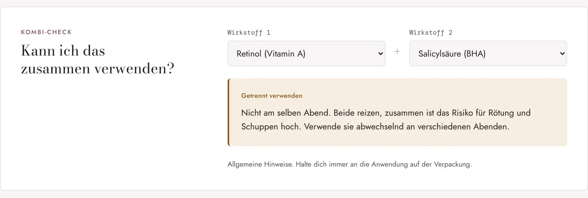
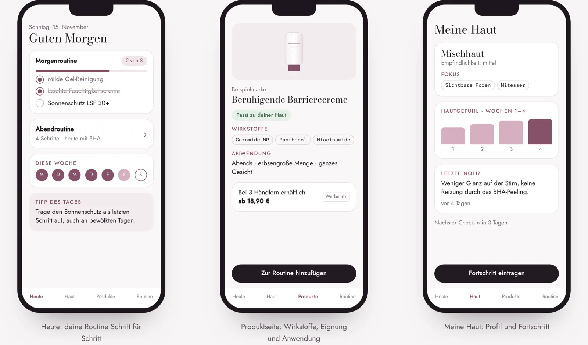

Fallstudie · Produktkonzept · UX/UI & Frontend
SKIN AI: Die eigene Haut verstehen, bevor man etwas kauft
Das Konzept einer kostenlosen Skincare-App, die hilft, die eigene Haut zu verstehen, passende Wirkstoffe zu finden und eine Routine aufzubauen. Ich habe dafür eine zweisprachige, interaktive Landingpage gestaltet, auf der jede Hauptfunktion schon ausprobiert werden kann.
- Rolle
- Konzept, UX, UI-Design, Texte, Frontend
- Zeitraum
- 2026
- Technik
- HTML, CSS, JavaScript, ohne Framework
- Status
- Prototyp ansehen
SKIN AI ist ein eigenes Konzept, keine veröffentlichte App. Der Prototyp speichert nichts außerhalb des Browsers. Alle Produkte und Profile darin sind Beispiele.
Auf einen Blick
ProblemHautpflege wird oft nach Werbung gekauft, ohne zu wissen, ob sie zur eigenen Haut passt.
LösungEin zweisprachiger, interaktiver Prototyp mit Hauttest, Gesichtskarte, Wirkstoff-Lexikon und Kombi-Check.
Meine RolleKonzept, UX, UI-Design, Texte und Frontend, mit KI-Unterstützung beim Code.
ErgebnisEin funktionierender Prototyp als Grundlage für die App. Noch nicht mit Nutzerinnen getestet.
Ausgangslage
Viele kaufen Hautpflege nach Werbung oder Empfehlungen und wissen nicht, ob sie zur eigenen Haut passt. Typische Fragen bleiben offen: Welcher Hauttyp bin ich? Welche Wirkstoffe helfen bei meinem Problem? Wo trage ich ein Produkt auf? Darf ich zwei Wirkstoffe zusammen verwenden?
Bestehende Angebote sind oft Markenapps, die vor allem die eigenen Produkte verkaufen, oder Ratgeber ohne persönlichen Bezug. SKIN AI soll beides verbinden: persönlich, markenunabhängig und verständlich.
Gedacht ist die App für zwei Gruppen: Einsteigerinnen und Einsteiger, die ihren Hauttyp nicht kennen und eine einfache Routine wollen, und Menschen mit Hautproblemen wie Akne, Rötungen oder Pigmentflecken, die gezielte Wirkstoffe und klare Grenzen der Selbstpflege brauchen.
Schon der erste Besuch soll ein Ergebnis bringen, ganz ohne App
Das wichtigste Ziel war ein echter Nutzen in zwei Minuten: ein eigenes Hautprofil und eine Routine für morgens und abends. Deshalb ist die Seite kein Prospekt. Hauttest, Gesichtskarte, Lexikon und Kombi-Check funktionieren direkt im Browser, die Antworten bleiben dort, und das Ergebnis lässt sich kopieren und teilen.

Vertrauen steht bewusst am Ende, direkt vor der Entscheidung
Die Reihenfolge der Abschnitte folgt den Fragen, die sich Besucherinnen nacheinander stellen: Was ist das? Was hat meine Haut? Was passt zu mir? Kann ich dem vertrauen? Der Schwerpunkt liegt in der Mitte, wo man die App ausprobieren kann. Kostenlos, Datenschutz und FAQ kommen erst danach, genau dann, wenn jemand entscheidet, ob er die App nutzen möchte.

Die Gesichtskarte zeigt, wo ein Produkt hingehört, und wo nicht
Nicht jedes Serum gehört auf das ganze Gesicht. Für sechs Produkte zeigt die Karte Zonen, Menge, Anwendung und Häufigkeit. Bereiche, die man aussparen sollte, etwa die Augenpartie beim BHA-Peeling, sind eigens gestrichelt markiert.
Die erste Version war eine gezeichnete Illustration und wirkte künstlich. Ich habe sie durch ein echtes Porträtfoto ersetzt, das Hautstruktur zeigt. Die ersten rosa Zonen wirkten auf der Haut fleckig. Weiße, transparente Flächen mit feiner Kontur heben die Zonen hervor, ohne das Gesicht zu verdecken.

Der Kombi-Check beantwortet die Frage, die man sonst googelt
„Darf ich Retinol und Vitamin C zusammen verwenden?“ ist eine der häufigsten Fragen in der Hautpflege. Im Lexikon sind zehn Wirkstoffe mit INCI-Namen, Wirkung, Eignung und Hinweisen erklärt. Der Kombi-Check ordnet jede der 100 möglichen Kombinationen in drei verständliche Stufen ein: passt, getrennt verwenden, mit Vorsicht.

Was die App nicht kann, gehört genauso ins Design
Bei Haut und Gesichtsfotos ist Vertrauen Teil des Designs. SKIN AI informiert zur kosmetischen Pflege und stellt keine Diagnosen. Bei Akne, Pigmentflecken und Rötungen erscheint der Hinweis auf die Hautärztin oder den Hautarzt hervorgehoben. Fotos sind freiwillig und werden nicht für KI-Training genutzt, Affiliate-Links sind als Werbelink gekennzeichnet.
Bewusst weggelassen habe ich erfundene Bewertungen, Nutzerzahlen und ein „von Dermatologen geprüft“ ohne echte Prüfung.
Zwei Sprachen, nicht eine Übersetzung
Die ganze Seite wechselt mit einem Klick zwischen Deutsch und Rumänisch, inklusive Test, Gesichtskarte, Lexikon und App-Screens. Die Antworten im Hauttest sind sprachunabhängig gespeichert, wer mitten im Test wechselt, verliert nichts. Die Texte sind für jede Sprache geschrieben, bis hin zu den Wochentagen in der App: M D M D F S S auf Deutsch, L M M J V S D auf Rumänisch.
Auch die Titelschrift hängt daran: Die erste hatte keine rumänischen Sonderzeichen. Bodoni Moda wirkt wie Kosmetikverpackung und enthält ă, ș und ț.

Barrierefreiheit von Anfang an mitgedacht
Alle Funktionen lassen sich mit der Tastatur bedienen, der Fokus ist immer sichtbar. Gewählte Optionen melden ihren Zustand an Screenreader, und das Testergebnis wird angesagt, sobald es erscheint. Beim Sprachwechsel ändert sich auch die Sprachangabe der Seite, damit Vorlesefunktionen richtig aussprechen. Animationen werden reduziert, wenn das Gerät es so eingestellt hat, und es gibt einen Dark Mode.
Mit KI gebaut, von mir entschieden
Den Code habe ich mit Unterstützung von Claude geschrieben. Konzept, Struktur, Texte, Design und die Regeln hinter Test und Kombi-Check kamen von mir und sind in acht Runden aus Feedback entstanden.
Was ich gelernt habe
- Echte Inhalte schaffen Vertrauen. Ein echtes Foto und echte Antworten wirken glaubwürdiger als Illustrationen und Platzhalter.
- Grenzen sind Teil der Nutzererfahrung. Bei Gesundheitsthemen gehört das, was eine App nicht kann, genauso sichtbar auf die Seite wie das, was sie kann.
- Mehrsprachigkeit von Anfang an planen. Schriften, Textlängen und Speicherlogik hängen davon ab. Nachträglich wird es teuer.
Nächste Schritte
Der Hauttest ist noch nicht mit echten Personen getestet. Als Nächstes möchte ich ihn mit 20 bis 50 Personen ausprobieren und auswerten, die Wirkstofftexte von einer Hautärztin, einem Hautarzt oder einer Apothekerin prüfen lassen und danach einen App-Prototyp aufbauen.
Lust auf mehr?
Ich freue mich über Fragen zu diesem Projekt oder ein Gespräch über eine Stelle im Bereich UX/UI und Frontend.